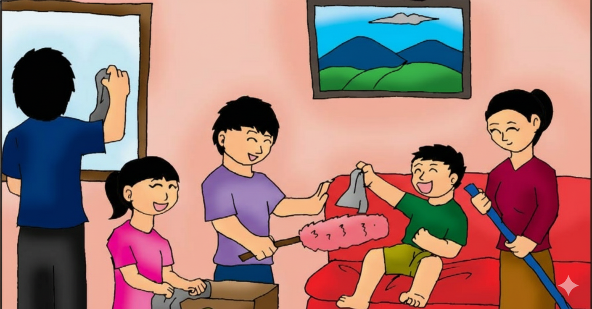
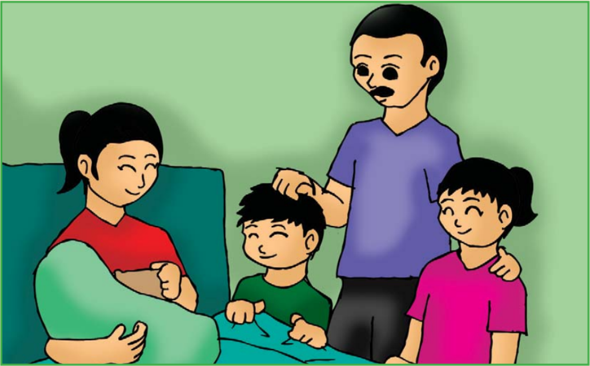
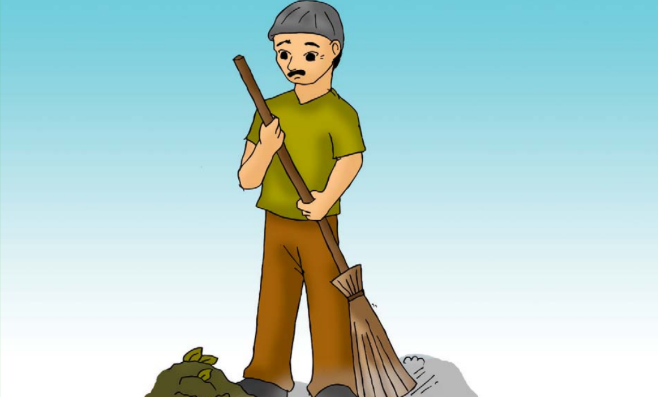
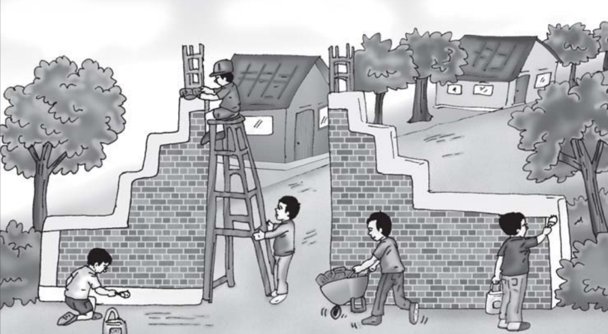

Materi ini diadaptasi dari Analisis Capaian Pembelajaran Fase B (Kelas III).
A. Peran dan Tugasku di Lingkungan Sekolah dan Masyarakat
Gambar 6.1 Contoh peran dan tugasku di lingkungan sekolah dan masyarakat
Siap-Siap Belajar
Di kelas III, kamu sudah belajar mengenai peran, tugas, tanggung jawab, dan interaksi sosial di lingkungan rumah. Tahukah kamu selain di rumah, kita pun memiliki peran, tugas, tanggung jawab dan juga melakukan interaksi sosial di sekolah dan lingkungan masyarakat?
Sebelum memulai kegiatan pembelajaran kali ini, coba tuliskan peran, tugas, dan tanggung jawab kalian di rumah. Setelah itu, tuliskan juga peraturan yang berlaku di lingkungan rumahmu.
Setelah kalian mengenal dan menerapkan peran, tugas, dan tanggung jawab di lingkungan rumah. Sekarang, kalian akan mengenal dan menerapkan hal tersebut di lingkungan yang lebih luas, seperti lingkungan sekolah dan lingkungan masyarakat. Kalian juga akan mengenal lebih banyak peran setiap manusia melalui kegiatan yang akan dilakukan.
Bekerja Sama di Lingkungan Rumah
Setiap Orang Punya Peran

Gambar 4.2 Kerja sama membersihkan rumah
Dalam keluarga, setiap orang mempunyai kedudukan dan peran masing-masing. Ayah adalah kepala keluarga, ia bertugas mencari nafkah dan memimpin keluarga.Ibu bertugas mengatur rumah dan mendidik anak-anak.
Anak-anak harus membantu ibu mengerjakan pekerjaan rumah, seperti menyapu atau menyiram tanaman. Jika semua bekerja sesuai perannya, situasi di rumah akan menyenangkan dan nyaman.
Cerita Keluarga Anton
Anton mempunyai seorang kakak perempuan.Ayahnya bekerja di sebuah perusahaan swasta terkemuka sedangkan ibunya adalah ibu rumah tangga. Di rumah Anton mempunyai tugas sendiri, yaitu menyiram tanaman sedangkan kakaknya bertugas menyapu.
Setiap hari Ibu membereskan rumah dan menyiapkan sarapan. Anton merasa bangga, karena ibunya seorang wanita lembut dan setiap pekerjaan yang dilakukannya selalu selesai dengan cepat dan rapi. Pada suatu waktu, ibu melahirkan adik laki- laki, Anton dan Kakak serta Ayah sangat senang.

Gambar 4.3 Ayah, kakak, dan Anton menjenguk ibu
Karena ibu masih sakit setelah melahirkan, tugas-tugas ibu di rumah di kerjakan bersama oleh Ayah, kakak, dan Anton. Mereka bekerjasama dan membagi tugas membereskan rumah dan menyiapkan sarapan. Anton, membantu kakak menyapu rumah. Sedangkan Ayah menyiapkan sarapan. Jadi meskipun ibu tidak bisa menjalan- kan tugas seperti biasanya, rumah tetap rapi dan bersih. Senang bukan? Bagaimana denganmu? Apakah kamu suka membantu ayah dan ibu?
Bekerja Sama di Lingkungan Sekolah
Sekolah adalah lingkungan terdekat kita setelah rumah. Di sekolah, ada banyak warga sekolah yang harus bekerja sama agar kegiatan belajar berjalan lancar.
Kepala Sekolah
Bertugas memimpin sekolah dan menyusun program kerja.
Guru
Bertugas mengajarkan ilmu, membimbing, dan mendidik murid di kelas.
Siswa (Murid)
Bertugas belajar dengan rajin dan mematuhi semua tata tertib sekolah.
Pustakawan
Bertugas menjaga perpustakaan dan melayani siswa yang meminjam buku.
Penjaga Sekolah
Bertugas membersihkan sekolah dan menjaga keamanan sarana sekolah.
Karyawan (Tata Usaha)
Bertugas membantu urusan administrasi sekolah dan pembayaran uang sekolah.
Kerjasama di sekolah tentu sangat diperlukan karena kegiatan di sekolah tidak akan berjalan jika komponen- komponen yang berada di sekolah tidak bekerjasama antara satu dan yang lainnya. Misalnya, kepala sekolah bertugas memimpin sekolah dan membuat program- program sekolah.

Gambar 4.1 Tukang Sapu
Sementara itu, guru bertugas men-didik anak-anak dan menjalankan program-program yang telah ditetapkan. Adapun penjaga sekolah bertanggung jawab menjaga kebersihan dan bersama-sama satpam menjaga keamanan sekolah.
Lalu, apa tugasmu sebagai murid? Kamu bertugas belajar dengan sungguh-sungguh dan mentaati per- aturan dan tata tertib yang berlaku di sekolah.
Kerjasama di antara semua komponen sekolah tersebut sangat diperlukan untuk mewujudkan sekolah yang lebih maju. Bagaimana dengan kerjasama di sekolahmu?
Tata Tertib Sekolah
Peraturan dibuat untuk mengatur kehidupan agar tertib. Ada peraturan tertulis (seperti wajib pakai seragam) dan tidak tertulis (seperti dilarang mengejek).Menaati peraturan melatih kita hidup disiplin.
Kerja Sama di Lingkungan Tetangga
Hidup Rukun Bertetangga
Kita juga harus bisa bekerja sama di lingkungan tetangga. Lingkungan terkecil adalah RT (Rukun Tetangga). Pengurus RT dipilih warga untuk membantu melancarkan urusan, seperti membuat jadwal ronda (siskamling) dan mengurus administrasi (KTP, KK).
Gotong Royong
Bangsa Indonesia terkenal suka musyawarah dan gotong-royong.Saat ada kegiatan, warga bekerja bakti membersihkan selokan atau membangun gapura.Manfaat kerja sama membuat pekerjaan berat jadi ringan dan meningkatkan rasa persatuan.

Gambar 3.17 Warga bergotong royong membangun gapura.
Hari Kemerdekaan RI disambut gembira oleh warga. Di Kelurahan Suka Damai diadakan berbagai lomba. Ada lomba kebersihan dan sepak bola antarRT. Para ibu mengadakan lomba menghias tumpeng dan rumah sehat. Warga RT 1 RW 4 mempersiapkan lomba.
Bangsa Indonesia terkenal suka musyawarah dan gotong-royong. Para warga pun bermusyawarah. Mereka berharap musyawarah menghasilkan mufakat. Warga memutuskan untuk bekerja bakti. Mereka melakukannya secara gotong-royong. Kerja bakti meliputi kegiatan berikut ini.
Membersihkan selokan, MCK umum, dan tempat pembuangan sampah.
Penghijauan.
Perbaikan pagar kampung.
Pembuatan gapura pintu masuk kampung.
Pengecatan gapura, pagar, pos ronda, dan Posyandu.
Dana berasal dari iuran warga. Semua warga melakukan
dengan ikhlas. Warga dibagi menjadi beberapa kelompok. Setiap
kelompok mendapat beban tugas gotong royong. Mereka harus
bertanggung jawab pada tugas masing-masing.
Hak dan Kewajiban Kita
Apa Bedanya?
Di setiap peran, kita punya Hak dan Kewajiban yang harus seimbang.
KEWAJIBAN adalah sesuatu yang harus kita lakukan. Contoh: menyayangi orang tua , berterima kasih, menjaga kesehatan tubuh, dan menjaga kebersihan rumah.
HAK adalah sesuatu yang kita terima. Contoh: mendapat kasih sayang, mendapat perawatan, mendapat waktu bermain, memiliki tubuh sehat, dan mendapatkan tempat tinggal.